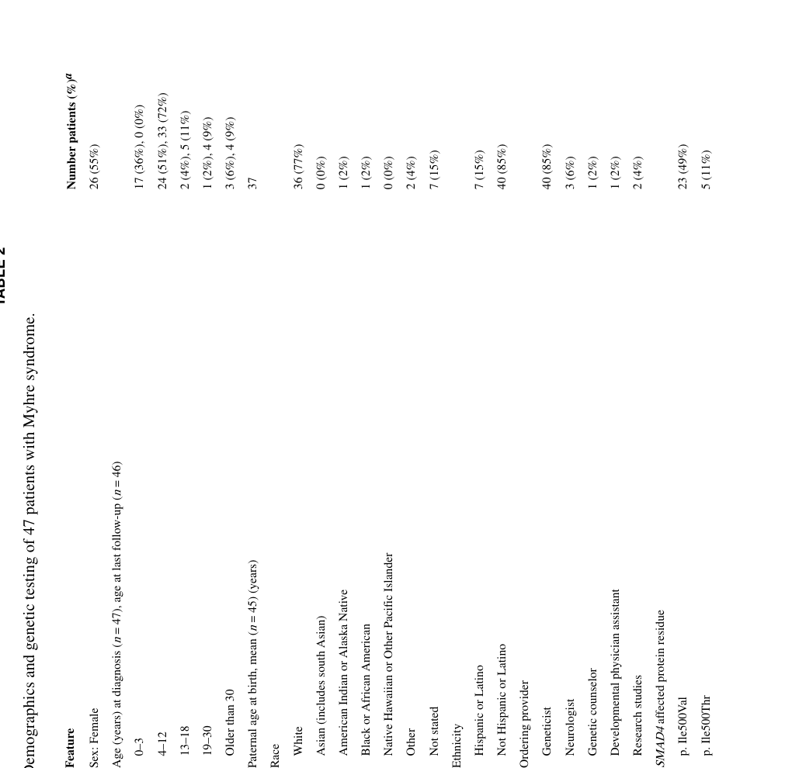

1. Disease Information
1.1 Overview (current understanding)
Myhre syndrome is an ultrarare, progressive, multisystem developmental/connective-tissue disorder caused by recurrent heterozygous SMAD4 missense variants, classically affecting residues Arg496 and Ile500 in the SMAD4 MH2 domain. Natural-history cohorts show progression across systems with time, including cardiopulmonary/vascular disease and fibroproliferative stenoses. (lin2024emergenceofthe pages 1-3, lin2024emergenceofthe pages 3-5)
A key historical synonym is Laryngotracheal–Arthropathy–Prognathism–Short Stature (LAPS) syndrome; modern molecular evidence indicates LAPS and Myhre syndrome are allelic disorders caused by SMAD4 variants. (brand2025researchreviewof pages 1-2)
1.2 Key identifiers (as available from retrieved sources)
- OMIM/MIM: 139210 (Myhre syndrome) (yang2022naturalhistoryof pages 1-2)
- Orphanet (ORPHA): 2588 (yang2022naturalhistoryof pages 1-2)
1.3 Synonyms / alternative names
- Myhre syndrome
- LAPS syndrome (Laryngotracheal–Arthropathy–Prognathism–Short Stature) (brand2025researchreviewof pages 1-2, lin2024emergenceofthe pages 24-25)
1.4 Evidence sources underlying disease knowledge
The literature base is dominated by case reports and small series, but increasingly includes cohort natural-history studies and dedicated multidisciplinary clinics. A 2025 research review compiled 92 publications (1988–2024), including many case reports/series and emerging natural-history work. (brand2025researchreviewof pages 2-3, brand2025researchreviewof pages 1-2)
Concrete aggregated sources include: - A French reference-center retrospective longitudinal cohort using medical records, EHR data warehouse, imaging, and photographs (n=12). (yang2022naturalhistoryof pages 1-2, yang2022naturalhistoryof pages 2-4) - A Massachusetts General Hospital (MGH) multispecialty clinic cohort with deep phenotyping and longitudinal follow-up (n=47). (lin2024emergenceofthe pages 1-3)
2. Etiology
2.1 Disease causal factors
Primary cause: pathogenic heterozygous missense variants in SMAD4, acting via gain-of-function mechanisms in Myhre syndrome. (yang2022naturalhistoryof pages 1-2, wood2024smad4mutationscausing pages 1-3)
Direct abstract-supported definition (French cohort): Myhre syndrome is "caused by a gain of function mutation in SMAD4 gene." (yang2022naturalhistoryof pages 1-2)
2.2 Risk factors
- Genetic: presence of a pathogenic SMAD4 Myhre-associated missense variant (Arg496Cys or codon 500 substitutions). (wood2024smad4mutationscausing pages 1-3, lin2024emergenceofthe pages 1-3)
- Parental age/sex-specific germline factors: 2024 AJHG evidence indicates Myhre-causing variants arise on the paternally derived allele in informative trios and are associated with a paternal age effect ("6.3 years excess for fathers"), consistent with selfish spermatogonial selection. (wood2024smad4mutationscausing pages 1-3)
2.3 Protective factors
No established genetic or environmental protective factors were identified in the retrieved sources.
2.4 Gene–environment interactions
Not established for Myhre syndrome in the retrieved sources.
3. Phenotypes
The two best-characterized cohorts in the retrieved corpus (French n=12; MGH n=47) demonstrate that Myhre syndrome is progressive and affects growth, skeleton/joints, skin, neurodevelopment, ENT/hearing, cardiovascular/vascular, and respiratory/airway systems. (lin2024emergenceofthe pages 3-5, yang2022naturalhistoryof pages 1-2)
Cohort-derived phenotype frequencies and timing
A structured cohort summary with suggested HPO terms, frequencies/denominators, and temporal notes is provided here:
Table (click to expand)
| Domain | Specific feature (plain language) | Suggested HPO term(s) | Frequency/statistic (with denominator) | Typical onset/temporal notes | Key source/citation context IDs |
|---|---|---|---|---|---|
| Cohort overview | Longitudinal follow-up in dedicated natural-history cohorts | HP:0000007 Autosomal dominant inheritance; HP:0003674 Progressive | MGH: 47 patients; 81% had at least 1 follow-up; among those followed ≥5 years, progression observed in all. French: 12 molecularly confirmed patients, median follow-up 7 years | Progressive multisystem disease across childhood to adulthood | (lin2024emergenceofthe pages 3-5, lin2024emergenceofthe pages 1-3, yang2022naturalhistoryof pages 2-4) |
| Growth | Intrauterine growth restriction / prenatal growth deficiency | HP:0001511 Intrauterine growth retardation | French: 12/12 (100%) | Prenatal onset; postnatal short stature persists | (yang2022naturalhistoryof pages 1-2) |
| Growth | Postnatal growth failure / short stature | HP:0004322 Short stature; HP:0001510 Growth delay | French: postnatal height median about -3.5 SD; MGH: short stature described as common, but no cohort-wide % in retrieved text | Begins in infancy/childhood and persists | (yang2022naturalhistoryof pages 1-2, lin2024emergenceofthe pages 3-5) |
| Hearing | Hearing impairment | HP:0000365 Hearing impairment | French: 7/12 (58%) | Detectable from about age 2 years; mixed conductive/sensorineural etiologies | (yang2022naturalhistoryof pages 2-4) |
| Hearing / genotype-phenotype | p.Arg496Cys associated with less hearing loss | HP:0000365 Hearing impairment | Qualitative reduction vs other variant groups in MGH cohort | Suggests milder sensory involvement for this variant subgroup | (lin2024emergenceofthe pages 1-3) |
| Vision | Visual problems (mainly refractive error/strabismus) | HP:0000505 Visual impairment; HP:0000486 Strabismus; HP:0000545 Myopia/Hyperopia as applicable | French: 9/12 (75%) | Childhood onset | (yang2022naturalhistoryof pages 2-4) |
| Craniofacial | Prognathism | HP:0000303 Mandibular prognathia | French: 11/12 (92%) | Childhood, persistent | (yang2022naturalhistoryof pages 1-2) |
| Craniofacial | Maxillary hypoplasia | HP:0000327 Hypoplasia of the maxilla | French: 9/11 (82%) | Childhood | (yang2022naturalhistoryof pages 1-2) |
| Craniofacial | Narrow/short palpebral fissures | HP:0000581 Narrow palpebral fissure | French: 9/12 (75%) | Childhood | (yang2022naturalhistoryof pages 1-2) |
| Craniofacial | Prominent chin | HP:0000303 Mandibular prognathia | MGH: 35/47 (74%), severe in 7/35 | Persistent dysmorphic feature | (lin2024emergenceofthe pages 17-19) |
| Neurodevelopment | Neurodevelopmental disorders in early childhood | HP:0012758 Neurodevelopmental abnormality | French: 80% in preschool age | Preschool onset | (yang2022naturalhistoryof pages 1-2) |
| Neurodevelopment | Developmental delay / intellectual disability | HP:0001263 Global developmental delay; HP:0001249 Intellectual disability | French: developmental delay/intellectual disability 9/12 (75%); MGH: intellectual disability in 32% | Early childhood onset; persistent | (yang2022naturalhistoryof pages 4-5, lin2024emergenceofthe pages 17-19) |
| Neurobehavioral | Autism spectrum disorder / social communication difficulties | HP:0000729 Autism; HP:0000733 Stereotypy/behavioral abnormality | MGH: ASD diagnosis in 72%; social challenges in 91%; academic accommodations in 44/47 (94%) | Usually recognized in childhood; major QoL/education impact | (lin2024emergenceofthe pages 17-19) |
| Neurobehavioral | ADHD | HP:0007018 Attention deficit hyperactivity disorder | MGH: 14 patients (56% of subgroup discussed) had combined inattentive/hyperactive ADHD | Childhood; may be undertreated | (lin2024emergenceofthe pages 29-31) |
| Neurologic / cerebrovascular | Brain MRI abnormalities | HP:0410263 Abnormal brain MRI; HP:0002500 Abnormal cerebral white matter morphology | French: 5/8 imaged | Childhood/adolescence | (yang2022naturalhistoryof pages 4-5) |
| Neurologic / vascular | Moyamoya-associated recurrent strokes | HP:0002527 Stroke; HP:0002134 Moyamoya disease | French: 1 patient | First reported from age 26 years in cohort | (yang2022naturalhistoryof pages 1-2, yang2022naturalhistoryof pages 4-5) |
| Skin | Thickened / stiff skin | HP:0008067 Thickened skin; HP:0000974 Skin sclerosis | French: 8/12 (67%); MGH: described as common/progressive but no overall % in retrieved text | Typically emerges in school age / around age 6; progressive | (yang2022naturalhistoryof pages 2-4, yang2022naturalhistoryof pages 4-5, lin2024emergenceofthe pages 25-27) |
| Musculoskeletal | Muscular hypertrophy / pseudomuscular build | HP:0009041 Muscular hypertrophy | French: 9/12 (75%) | Appears from about age 6 years | (yang2022naturalhistoryof pages 1-2) |
| Musculoskeletal | Joint limitation / contractures | HP:0001371 Flexion contracture; HP:0001382 Joint limitation | French: 8/9 (89%); MGH: severe contractures 5/47 (11%), less severe contractures 23/47 (49%) | Median onset 6 years in French cohort; earliest contracture at 26 months in MGH; progressive from small joints to generalized limitation | (yang2022naturalhistoryof pages 2-4, lin2024emergenceofthe pages 17-19) |
| Musculoskeletal | Stiff gait | HP:0002361 Stiff gait | MGH: 44/47 (94%) | Progressive mobility impact | (lin2024emergenceofthe pages 17-19) |
| Musculoskeletal | Brachydactyly | HP:0001156 Brachydactyly | French: 11/11 (100%); MGH: 30/47 (64%) | Early childhood / first years of life | (yang2022naturalhistoryof pages 2-4, lin2024emergenceofthe pages 17-19) |
| Musculoskeletal | Small hands | HP:0200055 Small hand | French: 8/8 (100%) | Early childhood | (yang2022naturalhistoryof pages 2-4) |
| Musculoskeletal | Clinodactyly | HP:0030084 Clinodactyly | French: 4/8 (50%); MGH: 33/47 (70%) | Early childhood | (yang2022naturalhistoryof pages 2-4, lin2024emergenceofthe pages 17-19) |
| Musculoskeletal | Toe 2-3 syndactyly | HP:0001770 Syndactyly of toes | MGH: 31/47 (66%) | Congenital/early childhood | (lin2024emergenceofthe pages 17-19) |
| Musculoskeletal | Scoliosis | HP:0002650 Scoliosis | MGH: 10/47 (21%) | Childhood/adolescence | (lin2024emergenceofthe pages 17-19) |
| Musculoskeletal | Fractures | HP:0002757 Pathologic fracture / recurrent fractures | MGH: 13/47 (28%) | From infancy to adulthood; authors note apparently elevated fracture burden | (lin2024emergenceofthe pages 17-19, lin2024emergenceofthe pages 29-31) |
| Skeletal imaging | Thickened calvarium | HP:0002684 Thick calvarium | French: 5/7 (71%) | Childhood | (yang2022naturalhistoryof pages 2-4) |
| Skeletal imaging | Enlarged vertebral pedicles | HP:0008467 Abnormal vertebral pedicle morphology | French: 7/10 (70%) | Childhood | (yang2022naturalhistoryof pages 2-4) |
| Cardiovascular | Congenital heart defects | HP:0001627 Abnormality of the cardiovascular system; HP:0001626 Congenital cardiovascular malformation | French: 7/12 (58%) | Often identified in infancy/childhood | (yang2022naturalhistoryof pages 2-4) |
| Cardiovascular | Pulmonary hypertension / pulmonary arterial hypertension | HP:0002092 Pulmonary hypertension | French: 5/8 assessed (63%) | Early childhood in Shone complex; early adolescence in others; major life-threatening complication | (yang2022naturalhistoryof pages 2-4) |
| Cardiovascular | Aortic hypoplasia | HP:0004970 Ascending aorta hypoplasia / aortic hypoplasia | MGH: overall % not retrieved; p.Ile500Thr subgroup 3/5 (60%) had moderate/severe aortic hypoplasia | Childhood recognition; important surveillance lesion | (lin2024emergenceofthe pages 3-5, lin2024emergenceofthe pages 1-3) |
| Cardiovascular / genotype-phenotype | p.Arg496Cys associated with less growth restriction and less aortic hypoplasia | HP:0001511 Intrauterine growth retardation; HP:0004970 Aortic hypoplasia | Qualitative reduction vs other variants in MGH cohort | Suggests variant-specific attenuation of some core phenotypes | (lin2024emergenceofthe pages 3-5, lin2024emergenceofthe pages 1-3) |
| Respiratory / airway | Multilevel laryngotracheal stenosis | HP:0001609 Laryngotracheal stenosis | French: 2 cases specifically described; MGH: severe feature recognized, % not retrieved in quoted text | Progressive; may emerge in childhood/adolescence; potentially lethal | (yang2022naturalhistoryof pages 4-5, lin2024emergenceofthe pages 24-25) |
| Respiratory | Obstructive sleep apnea | HP:0010535 Sleep apnea | French: 4 patients | Childhood/adolescence | (yang2022naturalhistoryof pages 4-5) |
| Respiratory / pleural | Pleural effusion | HP:0002202 Pleural effusion | French: 6/10 (60%) | Often later/progressive; contributed to chronic respiratory failure in severe cases | (yang2022naturalhistoryof pages 4-5) |
| Respiratory | Chronic respiratory failure | HP:0002878 Respiratory insufficiency | French: 2 adolescents | Severe late complication | (yang2022naturalhistoryof pages 4-5) |
| ENT / sinus-mastoid imaging | Opacified mastoids / sinusitis / opacified sinuses | HP:0010628 Abnormal mastoid morphology; HP:0000246 Sinusitis | MGH: 30%, 38%, and 13% respectively | Chronic/recurrent ENT burden | (lin2024emergenceofthe pages 24-25) |
| Endocrine / puberty | Precocious puberty (reported mainly in females) | HP:0000826 Precocious puberty | French: 8 females affected; MGH notes underascertainment due to age distribution | Around age 8 years in French cohort | (yang2022naturalhistoryof pages 4-5, lin2024emergenceofthe pages 25-27) |
| Immune | Hypogammaglobulinemia | HP:0004313 Decreased circulating immunoglobulin level | French: 4 patients; MGH outside testing: 7/13 (54%) had hypogammaglobulinemia | Variable; may prompt vaccine-response testing or IgG replacement in selected cases | (yang2022naturalhistoryof pages 4-5, lin2024emergenceofthe pages 17-19) |
| Gastrointestinal | Abdominal pain | HP:0002027 Abdominal pain | MGH: 40% | Chronic symptom; multifactorial | (lin2024emergenceofthe pages 24-25) |
| Gastrointestinal | Celiac disease | HP:0002608 Celiac disease | MGH review incidence 6% vs ~1% general population | Screening may be considered | (lin2024emergenceofthe pages 25-27) |
| Mortality / prognosis | Disease-related deaths | HP:0001423 Sudden death / mortality not directly mapped | MGH: 2 deaths; French: 3 deaths | Causes included complex cardiovascular disease, airway stenosis, PAH crisis, mesenteric ischemia, severe esophageal atresia | (lin2024emergenceofthe pages 3-5, yang2022naturalhistoryof pages 1-2) |
Table: This table summarizes cohort-derived phenotype frequencies, timing, and genotype-phenotype observations for Myhre syndrome from the major recent natural-history studies. It is useful for building disease knowledge-base phenotype assertions with suggested HPO mappings and citation-ready evidence links.
Selected high-yield phenotype notes (with statistics)
- Growth restriction: French cohort reported 100% IUGR (12/12), with persistent postnatal short stature (median ~ −3.5 SD). (yang2022naturalhistoryof pages 1-2)
- Neurodevelopment: French cohort reported neurodevelopmental disorders in 80% in preschool age; developmental delay/intellectual disability was 75% (9/12). (yang2022naturalhistoryof pages 1-2, yang2022naturalhistoryof pages 4-5)
- ASD/social difficulties: MGH cohort reported ASD diagnosis 72% and social challenges 91%; academic accommodations were 94% (44/47)—a major functional/QoL impact. (lin2024emergenceofthe pages 17-19)
- Joint limitation/contractures: French cohort 89% (8/9) with median onset 6 years; MGH cohort had severe contractures 11% (5/47) and less severe 49% (23/47), with earliest contractures at 26 months. (yang2022naturalhistoryof pages 2-4, lin2024emergenceofthe pages 17-19)
- Cardiovascular: French cohort CHD 58% (7/12) and pulmonary hypertension 63% (5/8 assessed). (yang2022naturalhistoryof pages 2-4)
- Respiratory/airway: French cohort reported multilevel acquired laryngotracheal stenosis in 2 cases; obstructive sleep apnea was reported in 4 patients; pleural effusion 60% (6/10). (yang2022naturalhistoryof pages 4-5)
Genotype–phenotype correlations (MGH cohort)
- MGH cohort showed variant clustering and associations: p.Arg496Cys carriers were less likely to have hearing loss, growth restriction, and aortic hypoplasia; p.Ile500Thr subgroup showed moderate/severe aortic hypoplasia in 60% (3/5). (lin2024emergenceofthe pages 1-3, lin2024emergenceofthe pages 3-5)
4. Genetic / Molecular Information
4.1 Causal gene
- SMAD4 (core mediator/co-SMAD in TGF-β/BMP signaling). (goff2015chondrodysplasiasandtgfβ pages 2-3, varenyiova2020myhresyndromeassociated pages 1-2)
4.2 Pathogenic variant spectrum (hotspot)
The mutational spectrum is unusually narrow: - c.1486C>T (p.Arg496Cys) - c.1498A>G (p.Ile500Val) - c.1499T>C (p.Ile500Thr) - c.1500A>G (p.Ile500Met) All within the MH2 domain; described as the four resolved variants "to date" in the 2024 AJHG study. (wood2024smad4mutationscausing pages 1-3)
In the MGH natural-history clinic cohort, variants were distributed: p.Ile500Val 49%, p.Ile500Thr 11%, p.Ile500Leu 2%, p.Arg496Cys 38%. (lin2024emergenceofthe pages 1-3)
4.3 Inheritance
- Typically autosomal dominant and de novo (clinic cohort statement: "autosomal dominant de novo variants"). (lin2024emergenceofthe pages 1-3)
- Strong evidence for paternal origin of DNMs and paternal age effect from 2024 AJHG. (wood2024smad4mutationscausing pages 1-3)
4.4 Functional consequences
Mechanistic models include gain-of-function, potentially via: - altered stability of the SMAD heterotrimer - reduced SMAD4 ubiquitination and a dominant-negative model has been proposed in the literature; the 2024 AJHG paper frames these as leading models. (wood2024smad4mutationscausing pages 1-3)
4.5 Modifier genes / epigenetics
- Modifier genes: not established in retrieved sources.
- Epigenetics/episignature: no Myhre-specific DNA methylation episignature was retrieved in this corpus; this remains a gap for this report.
5. Environmental Information
No validated environmental, lifestyle, or infectious causal contributors were identified in the retrieved sources; Myhre syndrome is primarily genetic.
6. Mechanism / Pathophysiology
6.1 Core pathway dysfunction
Myhre syndrome is consistently linked to dysregulation of TGF-β/BMP signaling mediated through SMAD4, with downstream consequences on extracellular matrix biology and fibrotic remodeling. (varenyiova2020myhresyndromeassociated pages 1-2, goff2015chondrodysplasiasandtgfβ pages 2-3)
A concise mechanistic statement from a clinical case report: SMAD4 mutation leads to defective TGF-β/BMP signaling "resulting in the proliferation of abnormal fibrous tissues." (varenyiova2020myhresyndromeassociated pages 1-2)
6.2 Fibroproliferation, ECM deposition, and stenosis (causal chain)
A clinic-derived mechanistic hypothesis in 2024 proposes multilevel airway stenosis arises from developmental vulnerability plus "proliferative … desquamation" causing progressive narrowing of tubular structures (external ear canals → sinuses/choanae → larynx/trachea/bronchi), with "copious debris" contributing to occlusion. (lin2024emergenceofthe pages 24-25)
Pulmonary pathology described in the MGH cohort includes "diffuse interstitial fibrosis with copious collagen and smooth muscle hyperplasia of the airways," consistent with aberrant ECM deposition and airway remodeling. (lin2024emergenceofthe pages 24-25)
6.3 Skeletal growth plate / cartilage mechanisms
A TGF-β skeletal dysplasia review places SMAD4 as the co-mediator SMAD regulating chondrogenesis (condensation, proliferation, ECM deposition, differentiation), and highlights mouse evidence that chondrocyte-specific Smad4 loss disrupts growth plates and causes dwarfism—supporting involvement of chondrocyte/osteoblast programs in skeletal phenotypes seen in Myhre syndrome. (goff2015chondrodysplasiasandtgfβ pages 2-3)
6.4 Candidate ontology terms
Suggested GO Biological Process terms (mechanism-grounded):
- transforming growth factor beta receptor signaling pathway
- BMP signaling pathway
- SMAD protein signal transduction
- extracellular matrix organization
- collagen fibril organization
- cartilage development / growth plate cartilage development
- wound healing / scarring
Supported broadly by pathway reviews and case-based mechanistic statements tying SMAD4 to TGF-β/BMP signaling and ECM. (goff2015chondrodysplasiasandtgfβ pages 2-3, varenyiova2020myhresyndromeassociated pages 1-2, lin2024emergenceofthe pages 24-25)
Suggested Cell Ontology (CL) terms (based on implicated tissues/processes):
- fibroblast (CL:0000057)
- endothelial cell (CL:0000115)
- vascular smooth muscle cell (CL:0000629)
- cardiomyocyte (CL:0000556)
- chondrocyte (cartilage; consistent with growth plate involvement)
These are motivated by connective tissue fibrosis/ECM deposition, vascular stenosis, cardiac remodeling/pericardial fibrosis, and skeletal dysplasia mechanisms. (varenyiova2020myhresyndromeassociated pages 1-2, goff2015chondrodysplasiasandtgfβ pages 2-3, lin2016gain‐of‐functionmutationsin pages 10-11)
Suggested UBERON anatomical structures (high-level): - skin, joints, cartilage/growth plate, heart/pericardium, aorta/large arteries, trachea/bronchi/lungs, inner ear. (yang2022naturalhistoryof pages 4-5, lin2016gain‐of‐functionmutationsin pages 9-10, lin2024emergenceofthe pages 24-25)
7. Anatomical Structures Affected
- Connective tissues: skin (stiff/thickened), joints (contractures/arthropathy). (yang2022naturalhistoryof pages 4-5, jensen2020acaseof pages 1-2)
- Cardiovascular system: congenital heart defects, aortic hypoplasia/branch involvement, pericardial disease, restrictive cardiomyopathy, pulmonary hypertension. (yang2022naturalhistoryof pages 2-4, lin2024emergenceofthe pages 22-24, lin2016gain‐of‐functionmutationsin pages 9-10)
- Respiratory system: laryngotracheal stenosis, obstructive sleep apnea, restrictive/obstructive defects, interstitial fibrosis. (yang2022naturalhistoryof pages 4-5, lin2024emergenceofthe pages 24-25)
- CNS: variable neurodevelopmental phenotype; occasional cerebrovascular events (moyamoya strokes reported in French cohort). (yang2022naturalhistoryof pages 4-5)
8. Temporal Development
- Prenatal/infancy: IUGR and postnatal failure to thrive are consistent. (yang2022naturalhistoryof pages 1-2)
- Preschool: neurodevelopmental disorders often recognized (80% in French cohort). (yang2022naturalhistoryof pages 1-2)
- School age (~6 years): thickened/stiff skin and joint limitation emerge; muscular hypertrophy around age ~6 (French cohort). (yang2022naturalhistoryof pages 1-2, yang2022naturalhistoryof pages 2-4)
- Adolescence/adulthood: higher risk period for severe cardiopulmonary/vascular complications such as pulmonary arterial hypertension, vascular stenosis, and multilevel airway stenosis; deaths in cohorts occurred in late adolescence/20s, and MGH cohort notes progression in all followed ≥5 years. (yang2022naturalhistoryof pages 1-2, lin2024emergenceofthe pages 1-3)
9. Inheritance and Population
9.1 Inheritance pattern
Autosomal dominant, most often de novo; paternal germline enrichment and paternal-age effect supported by 2024 AJHG. (lin2024emergenceofthe pages 1-3, wood2024smad4mutationscausing pages 1-3)
9.2 Epidemiology
Robust prevalence/incidence estimates were not identified in the retrieved sources. Available evidence highlights that it is ultrarare and historically had ~90 published cases by 2022 with ~70 molecularly confirmed. (yang2022naturalhistoryof pages 1-2)
10. Diagnostics
10.1 Clinical suspicion
Clinical suspicion is often triggered by a recognizable pattern: short stature, characteristic facial features (prognathism), stiff joints/contractures, hearing impairment, neurodevelopmental differences, and cardiopulmonary/vascular disease. (yang2022naturalhistoryof pages 1-2, lin2016gain‐of‐functionmutationsin pages 10-11)
10.2 Genetic confirmation and testing strategy
- Diagnosis is confirmed by identifying a pathogenic SMAD4 hotspot missense variant. (lin2016gain‐of‐functionmutationsin pages 11-12, lin2024emergenceofthe pages 1-3)
- A rheumatology case report emphasizes that early-onset scleroderma-like presentations should prompt genetic testing; in a misdiagnosed patient, genetic testing identified SMAD4 c.1499T>C (p.Ile500Thr) and allowed cessation of immunosuppression. (jensen2020acaseof pages 2-4, jensen2020acaseof pages 1-2)
- The same report supports modern NGS approaches (targeted panels/WES/WGS) and highlights de novo status via parental testing. (jensen2020acaseof pages 2-4)
10.3 Differential diagnosis
- Juvenile systemic sclerosis / juvenile scleroderma (Myhre can mimic; biopsy may resemble scleroderma). (jensen2020acaseof pages 2-4, jensen2020acaseof pages 1-2)
- Other genetic scleroderma mimics and syndromes with aortic hypoplasia/coarctation patterns: Williams, Alagille, Ras-MAPK pathway syndromes; additionally, RCM/pericarditis differentials such as MULIBREY dwarfism, Cantu syndrome, and CACP syndrome were discussed in earlier cardiovascular work. (lin2024emergenceofthe pages 29-31, lin2016gain‐of‐functionmutationsin pages 10-11)
10.4 Surveillance and monitoring tests (real-world implementation)
MGH clinic recommendations provide concrete implementation details: - Whole-aorta CTA generally at ages ~5–7 years without anesthesia, repeat ~every 5 years or sooner for unexplained hypertension; MRA after ~9–11 years as an alternative to reduce radiation. (lin2024emergenceofthe pages 22-24) - Echocardiography promptly if pericardial disease suspected; consider cardiac catheterization if restrictive cardiomyopathy suspected and echo is nondiagnostic. (lin2024emergenceofthe pages 22-24) - Pulmonary: increased PFT use and advanced modalities (oscillometry, lung clearance index), CT angiography, and selective biopsy/postmortem studies to delineate lung disease. (lin2024emergenceofthe pages 24-25) - ENT/hearing: tympanometry and behavioral audiometry, ABR under anesthesia if needed; classroom accommodations and hearing assistive technologies; debris removal due to canal obstruction risk. (lin2024emergenceofthe pages 24-25)
11. Outcome / Prognosis
Natural-history cohorts indicate Myhre syndrome is progressive and can have life-threatening complications. - In the MGH cohort, among those followed ≥5 years, progression was seen in all; two deaths were reported (complex cardiovascular disease; airway stenosis). (lin2024emergenceofthe pages 1-3, lin2024emergenceofthe pages 3-5) - In the French cohort, deaths occurred from PAH crises and mesenteric ischemia in late adolescence/20s, and a toddler death from severe congenital anomaly; cerebrovascular complications (moyamoya stroke) occurred in adulthood in one patient. (yang2022naturalhistoryof pages 1-2, yang2022naturalhistoryof pages 4-5)
12. Treatment
12.1 Pharmacotherapy (anti-fibrotic rationale): losartan
A small pilot clinical trial assessed losartan in Myhre syndrome (4 enrolled; 3 treated 12 months). The study used systemic-sclerosis endpoints including modified Rodnan skin score (mRSS), goniometry for joint ROM, and speckle-tracking echocardiography (GLPS). (cappuccio2021apilotclinical pages 1-2)
Quantitative and safety details from the trial: - One subject discontinued due to dizziness; another developed orthostatic hypotension at 100 mg/day requiring dose reduction to 50 mg/day. (cappuccio2021apilotclinical pages 3-5) - After 12 months, mRSS decreased in all treated subjects and joint ROM improved in all, with statistically significant changes only in one individual (S2); GLPS showed a trend toward improvement in others. (cappuccio2021apilotclinical pages 3-5) - Baseline myocardial strain was reduced: average GLPS in four subjects 15.3 ± 2% vs normative ~20.2%. (cappuccio2021apilotclinical pages 3-5)
12.2 Multidisciplinary and interventional management (real-world implementation)
- Airway disease management emphasizes prevention and cautious evaluation because procedures may stimulate stenosis; multilevel airway stenosis is described as "typically lethal" and education of anesthesiologists is part of care. (lin2024emergenceofthe pages 24-25)
- Cardiovascular interventions include angioplasty, surgical repairs, valve replacements, and even heart transplantation in severe disease (historical cardiovascular cohort). (lin2016gain‐of‐functionmutationsin pages 9-10)
- ENT/hearing management includes assistive technologies, cerumen/keratin debris removal, and carefully counseled surgeries given scarring/anesthesia risks. (lin2024emergenceofthe pages 24-25)
- Physical therapy is recommended to preserve mobility and function; QoL impact of progressive arthritis/contractures is emphasized. (lin2024emergenceofthe pages 29-31)
12.3 MAXO term suggestions (treatment actions)
- angiotensin receptor blocker therapy (losartan)
- cardiovascular imaging surveillance (CTA/MRA, echocardiography)
- cardiac catheterization
- physical therapy / rehabilitation therapy
- hearing assistive device use
- airway dilation procedures (balloon dilation) / tracheostomy (in severe airway stenosis)
(Clinical action types supported in cohort descriptions and review excerpts.) (lin2024emergenceofthe pages 22-24, lin2024emergenceofthe pages 24-25, yang2022naturalhistoryof pages 4-5)
13. Prevention
Primary prevention is not currently feasible because most cases are de novo; prevention focuses on anticipatory surveillance and complication prevention (tertiary prevention) through structured cardiopulmonary/vascular monitoring and careful peri-procedural planning. (lin2024emergenceofthe pages 22-24, lin2024emergenceofthe pages 24-25)
14. Other Species / Natural Disease
No naturally occurring Myhre syndrome in other species was identified in the retrieved sources.
15. Model Organisms
A 2025 research review notes that there are no research articles describing animal models specifically for Myhre syndrome in the published literature it reviewed, although conference abstracts may exist. (brand2025researchreviewof pages 2-3)
However, related mechanistic inference is supported by mouse studies of Smad4 function in cartilage/ear development cited in natural-history work and reviews, indicating relevant pathway biology even if not a disease-specific knock-in model. (yang2022naturalhistoryof pages 12-12, goff2015chondrodysplasiasandtgfβ pages 2-3)
Recent developments and latest research emphasis (2023–2024)
- Large clinic-based natural history (MGH 2016–2023; published 2024): deep phenotyping in 47 individuals, documenting progression and providing multiple feature frequencies (including neurodevelopmental, skeletal, immune, and ENT imaging findings) plus variant-specific associations. URL: https://doi.org/10.1002/ajmg.a.63638 (May 2024). (lin2024emergenceofthe pages 1-3, lin2024emergenceofthe pages 17-19, lin2024emergenceofthe pages 22-24)
- Male germline selection mechanism (AJHG 2024): paternal origin in all informative trios, paternal age effect, sperm enrichment at codon 500, supporting selfish spermatogonial selection. URL: https://doi.org/10.1016/j.ajhg.2024.07.006 (Sept 2024). (wood2024smad4mutationscausing pages 1-3)
Evidence gaps (for knowledge base completion)
- MONDO ID / MeSH / ICD codes were not retrievable from the current corpus.
- Population prevalence/incidence and penetrance estimates were not identified in retrieved sources.
- Myhre-specific epigenetic episignature evidence was not found in the retrieved sources.
Key quoted statements from abstracts (for evidence items)
- "Myhre syndrome is an increasingly diagnosed ultrarare condition caused by recurrent germline autosomal dominant de novo variants in SMAD4." (Lin et al., 2024; URL in tool output) (lin2024emergenceofthe pages 1-3)
- "Myhre syndrome (MS) is a rare genetic disease… caused by a gain of function mutation in SMAD4 gene." (Yang et al., 2022; URL in tool output) (yang2022naturalhistoryof pages 1-2)
References
-
(lin2024emergenceofthe pages 1-3): Angela E. Lin, Eleanor R. Scimone, Robyn P. Thom, Duraisamy Balaguru, T. Bernard Kinane, Peter P. Moschovis, Michael S. Cohen, Weizhen Tan, Cole D. Hague, Katelyn Dannheim, Lynne L. Levitsky, Evelyn Lilly, Daniel V. DiGiacomo, Kara M. Masse, Sarah M. Kadzielski, Claire A. Zar‐Kessler, Leo C. Ginns, Ann M. Neumeyer, Mary K. Colvin, Jack S. Elder, Christopher P. Learn, Hongmei Mou, Kathryn M. Weagle, Karen A. Buch, William E. Butler, Kenda Alhadid, Patricia L. Musolino, Sadia Sultana, Dhrubajyoti Bandyopadhyay, Otto Rapalino, Zachary S. Peacock, Elizabeth L. Chou, Gena Heidary, Aaron T. Dorfman, Shaine A. Morris, James D. Bergin, Jonathan H. Rayment, Lisa A. Schimmenti, and Mark E. Lindsay. Emergence of the natural history of myhre syndrome: 47 patients evaluated in the massachusetts general hospital myhre syndrome clinic (2016–2023). American Journal of Medical Genetics Part A, May 2024. URL: https://doi.org/10.1002/ajmg.a.63638, doi:10.1002/ajmg.a.63638. This article has 30 citations.
-
(lin2024emergenceofthe pages 3-5): Angela E. Lin, Eleanor R. Scimone, Robyn P. Thom, Duraisamy Balaguru, T. Bernard Kinane, Peter P. Moschovis, Michael S. Cohen, Weizhen Tan, Cole D. Hague, Katelyn Dannheim, Lynne L. Levitsky, Evelyn Lilly, Daniel V. DiGiacomo, Kara M. Masse, Sarah M. Kadzielski, Claire A. Zar‐Kessler, Leo C. Ginns, Ann M. Neumeyer, Mary K. Colvin, Jack S. Elder, Christopher P. Learn, Hongmei Mou, Kathryn M. Weagle, Karen A. Buch, William E. Butler, Kenda Alhadid, Patricia L. Musolino, Sadia Sultana, Dhrubajyoti Bandyopadhyay, Otto Rapalino, Zachary S. Peacock, Elizabeth L. Chou, Gena Heidary, Aaron T. Dorfman, Shaine A. Morris, James D. Bergin, Jonathan H. Rayment, Lisa A. Schimmenti, and Mark E. Lindsay. Emergence of the natural history of myhre syndrome: 47 patients evaluated in the massachusetts general hospital myhre syndrome clinic (2016–2023). American Journal of Medical Genetics Part A, May 2024. URL: https://doi.org/10.1002/ajmg.a.63638, doi:10.1002/ajmg.a.63638. This article has 30 citations.
-
(brand2025researchreviewof pages 1-2): Maggie R. Brand, Ryan Monsberger, Robert J. Hopkin, and Angela E. Lin. Research review of myhre syndrome. American journal of medical genetics. Part C, Seminars in medical genetics, pages e32145, Jun 2025. URL: https://doi.org/10.1002/ajmg.c.32145, doi:10.1002/ajmg.c.32145. This article has 6 citations.
-
(yang2022naturalhistoryof pages 1-2): David Dawei Yang, Marlene Rio, Caroline Michot, Nathalie Boddaert, Wael Yacoub, Nicolas Garcelon, Briac Thierry, Damien Bonnet, Sophie Rondeau, Dominique Herve, Stephanie Guey, Francois Angoulvant, and Valerie Cormier-Daire. Natural history of myhre syndrome. Orphanet Journal of Rare Diseases, Jul 2022. URL: https://doi.org/10.1186/s13023-022-02447-x, doi:10.1186/s13023-022-02447-x. This article has 35 citations and is from a peer-reviewed journal.
-
(lin2024emergenceofthe pages 24-25): Angela E. Lin, Eleanor R. Scimone, Robyn P. Thom, Duraisamy Balaguru, T. Bernard Kinane, Peter P. Moschovis, Michael S. Cohen, Weizhen Tan, Cole D. Hague, Katelyn Dannheim, Lynne L. Levitsky, Evelyn Lilly, Daniel V. DiGiacomo, Kara M. Masse, Sarah M. Kadzielski, Claire A. Zar‐Kessler, Leo C. Ginns, Ann M. Neumeyer, Mary K. Colvin, Jack S. Elder, Christopher P. Learn, Hongmei Mou, Kathryn M. Weagle, Karen A. Buch, William E. Butler, Kenda Alhadid, Patricia L. Musolino, Sadia Sultana, Dhrubajyoti Bandyopadhyay, Otto Rapalino, Zachary S. Peacock, Elizabeth L. Chou, Gena Heidary, Aaron T. Dorfman, Shaine A. Morris, James D. Bergin, Jonathan H. Rayment, Lisa A. Schimmenti, and Mark E. Lindsay. Emergence of the natural history of myhre syndrome: 47 patients evaluated in the massachusetts general hospital myhre syndrome clinic (2016–2023). American Journal of Medical Genetics Part A, May 2024. URL: https://doi.org/10.1002/ajmg.a.63638, doi:10.1002/ajmg.a.63638. This article has 30 citations.
-
(brand2025researchreviewof pages 2-3): Maggie R. Brand, Ryan Monsberger, Robert J. Hopkin, and Angela E. Lin. Research review of myhre syndrome. American journal of medical genetics. Part C, Seminars in medical genetics, pages e32145, Jun 2025. URL: https://doi.org/10.1002/ajmg.c.32145, doi:10.1002/ajmg.c.32145. This article has 6 citations.
-
(yang2022naturalhistoryof pages 2-4): David Dawei Yang, Marlene Rio, Caroline Michot, Nathalie Boddaert, Wael Yacoub, Nicolas Garcelon, Briac Thierry, Damien Bonnet, Sophie Rondeau, Dominique Herve, Stephanie Guey, Francois Angoulvant, and Valerie Cormier-Daire. Natural history of myhre syndrome. Orphanet Journal of Rare Diseases, Jul 2022. URL: https://doi.org/10.1186/s13023-022-02447-x, doi:10.1186/s13023-022-02447-x. This article has 35 citations and is from a peer-reviewed journal.
-
(wood2024smad4mutationscausing pages 1-3): Katherine A. Wood, R Spencer Tong, Marialetizia Motta, Viviana Cordeddu, Eleanor R. Scimone, Stephen J. Bush, Dale W. Maxwell, Eleni Giannoulatou, Viviana Caputo, Alice Traversa, Cecilia Mancini, Giovanni B. Ferrero, Francesco Benedicenti, Paola Grammatico, Daniela Melis, Katharina Steindl, Nicola Brunetti-Pierri, Eva Trevisson, Andrew OM. Wilkie, Angela E. Lin, Valerie Cormier-Daire, Stephen RF. Twigg, Marco Tartaglia, and Anne Goriely. Smad4 mutations causing myhre syndrome are under positive selection in the male germline. The American Journal of Human Genetics, 111:1953-1969, Sep 2024. URL: https://doi.org/10.1016/j.ajhg.2024.07.006, doi:10.1016/j.ajhg.2024.07.006. This article has 19 citations.
-
(lin2024emergenceofthe pages 17-19): Angela E. Lin, Eleanor R. Scimone, Robyn P. Thom, Duraisamy Balaguru, T. Bernard Kinane, Peter P. Moschovis, Michael S. Cohen, Weizhen Tan, Cole D. Hague, Katelyn Dannheim, Lynne L. Levitsky, Evelyn Lilly, Daniel V. DiGiacomo, Kara M. Masse, Sarah M. Kadzielski, Claire A. Zar‐Kessler, Leo C. Ginns, Ann M. Neumeyer, Mary K. Colvin, Jack S. Elder, Christopher P. Learn, Hongmei Mou, Kathryn M. Weagle, Karen A. Buch, William E. Butler, Kenda Alhadid, Patricia L. Musolino, Sadia Sultana, Dhrubajyoti Bandyopadhyay, Otto Rapalino, Zachary S. Peacock, Elizabeth L. Chou, Gena Heidary, Aaron T. Dorfman, Shaine A. Morris, James D. Bergin, Jonathan H. Rayment, Lisa A. Schimmenti, and Mark E. Lindsay. Emergence of the natural history of myhre syndrome: 47 patients evaluated in the massachusetts general hospital myhre syndrome clinic (2016–2023). American Journal of Medical Genetics Part A, May 2024. URL: https://doi.org/10.1002/ajmg.a.63638, doi:10.1002/ajmg.a.63638. This article has 30 citations.
-
(yang2022naturalhistoryof pages 4-5): David Dawei Yang, Marlene Rio, Caroline Michot, Nathalie Boddaert, Wael Yacoub, Nicolas Garcelon, Briac Thierry, Damien Bonnet, Sophie Rondeau, Dominique Herve, Stephanie Guey, Francois Angoulvant, and Valerie Cormier-Daire. Natural history of myhre syndrome. Orphanet Journal of Rare Diseases, Jul 2022. URL: https://doi.org/10.1186/s13023-022-02447-x, doi:10.1186/s13023-022-02447-x. This article has 35 citations and is from a peer-reviewed journal.
-
(lin2024emergenceofthe pages 29-31): Angela E. Lin, Eleanor R. Scimone, Robyn P. Thom, Duraisamy Balaguru, T. Bernard Kinane, Peter P. Moschovis, Michael S. Cohen, Weizhen Tan, Cole D. Hague, Katelyn Dannheim, Lynne L. Levitsky, Evelyn Lilly, Daniel V. DiGiacomo, Kara M. Masse, Sarah M. Kadzielski, Claire A. Zar‐Kessler, Leo C. Ginns, Ann M. Neumeyer, Mary K. Colvin, Jack S. Elder, Christopher P. Learn, Hongmei Mou, Kathryn M. Weagle, Karen A. Buch, William E. Butler, Kenda Alhadid, Patricia L. Musolino, Sadia Sultana, Dhrubajyoti Bandyopadhyay, Otto Rapalino, Zachary S. Peacock, Elizabeth L. Chou, Gena Heidary, Aaron T. Dorfman, Shaine A. Morris, James D. Bergin, Jonathan H. Rayment, Lisa A. Schimmenti, and Mark E. Lindsay. Emergence of the natural history of myhre syndrome: 47 patients evaluated in the massachusetts general hospital myhre syndrome clinic (2016–2023). American Journal of Medical Genetics Part A, May 2024. URL: https://doi.org/10.1002/ajmg.a.63638, doi:10.1002/ajmg.a.63638. This article has 30 citations.
-
(lin2024emergenceofthe pages 25-27): Angela E. Lin, Eleanor R. Scimone, Robyn P. Thom, Duraisamy Balaguru, T. Bernard Kinane, Peter P. Moschovis, Michael S. Cohen, Weizhen Tan, Cole D. Hague, Katelyn Dannheim, Lynne L. Levitsky, Evelyn Lilly, Daniel V. DiGiacomo, Kara M. Masse, Sarah M. Kadzielski, Claire A. Zar‐Kessler, Leo C. Ginns, Ann M. Neumeyer, Mary K. Colvin, Jack S. Elder, Christopher P. Learn, Hongmei Mou, Kathryn M. Weagle, Karen A. Buch, William E. Butler, Kenda Alhadid, Patricia L. Musolino, Sadia Sultana, Dhrubajyoti Bandyopadhyay, Otto Rapalino, Zachary S. Peacock, Elizabeth L. Chou, Gena Heidary, Aaron T. Dorfman, Shaine A. Morris, James D. Bergin, Jonathan H. Rayment, Lisa A. Schimmenti, and Mark E. Lindsay. Emergence of the natural history of myhre syndrome: 47 patients evaluated in the massachusetts general hospital myhre syndrome clinic (2016–2023). American Journal of Medical Genetics Part A, May 2024. URL: https://doi.org/10.1002/ajmg.a.63638, doi:10.1002/ajmg.a.63638. This article has 30 citations.
-
(goff2015chondrodysplasiasandtgfβ pages 2-3): Carine Le Goff and Valerie Cormier-Daire. Chondrodysplasias and tgfβ signaling. BoneKEy reports, 4:642, Mar 2015. URL: https://doi.org/10.1038/bonekey.2015.9, doi:10.1038/bonekey.2015.9. This article has 12 citations.
-
(varenyiova2020myhresyndromeassociated pages 1-2): Zofia Varenyiova, Gabriela Hrckova, Denisa Ilencikova, and Ludmila Podracka. Myhre syndrome associated with dunbar syndrome and urinary tract abnormalities: a case report. Frontiers in Pediatrics, Feb 2020. URL: https://doi.org/10.3389/fped.2020.00072, doi:10.3389/fped.2020.00072. This article has 13 citations.
-
(lin2016gain‐of‐functionmutationsin pages 10-11): Angela E. Lin, Caroline Michot, Valerie Cormier‐Daire, Thomas J. L'Ecuyer, G. Paul Matherne, Barrett H. Barnes, Jennifer B. Humberson, Andrew C. Edmondson, Elaine Zackai, Matthew J. O'Connor, Julie D. Kaplan, Makram R. Ebeid, Joel Krier, Elizabeth Krieg, Brian Ghoshhajra, and Mark E. Lindsay. Gain‐of‐function mutations in smad4 cause a distinctive repertoire of cardiovascular phenotypes in patients with myhre syndrome. American Journal of Medical Genetics Part A, 170:2617-2631, Jun 2016. URL: https://doi.org/10.1002/ajmg.a.37739, doi:10.1002/ajmg.a.37739. This article has 80 citations.
-
(lin2016gain‐of‐functionmutationsin pages 9-10): Angela E. Lin, Caroline Michot, Valerie Cormier‐Daire, Thomas J. L'Ecuyer, G. Paul Matherne, Barrett H. Barnes, Jennifer B. Humberson, Andrew C. Edmondson, Elaine Zackai, Matthew J. O'Connor, Julie D. Kaplan, Makram R. Ebeid, Joel Krier, Elizabeth Krieg, Brian Ghoshhajra, and Mark E. Lindsay. Gain‐of‐function mutations in smad4 cause a distinctive repertoire of cardiovascular phenotypes in patients with myhre syndrome. American Journal of Medical Genetics Part A, 170:2617-2631, Jun 2016. URL: https://doi.org/10.1002/ajmg.a.37739, doi:10.1002/ajmg.a.37739. This article has 80 citations.
-
(jensen2020acaseof pages 1-2): Barbara Jensen, Rebecca James, Ying Hong, Ebun Omoyinmi, Clarissa Pilkington, Neil J. Sebire, Kevin J. Howell, Paul A. Brogan, and Despina Eleftheriou. A case of myhre syndrome mimicking juvenile scleroderma. Pediatric Rheumatology Online Journal, Sep 2020. URL: https://doi.org/10.1186/s12969-020-00466-1, doi:10.1186/s12969-020-00466-1. This article has 14 citations.
-
(lin2024emergenceofthe pages 22-24): Angela E. Lin, Eleanor R. Scimone, Robyn P. Thom, Duraisamy Balaguru, T. Bernard Kinane, Peter P. Moschovis, Michael S. Cohen, Weizhen Tan, Cole D. Hague, Katelyn Dannheim, Lynne L. Levitsky, Evelyn Lilly, Daniel V. DiGiacomo, Kara M. Masse, Sarah M. Kadzielski, Claire A. Zar‐Kessler, Leo C. Ginns, Ann M. Neumeyer, Mary K. Colvin, Jack S. Elder, Christopher P. Learn, Hongmei Mou, Kathryn M. Weagle, Karen A. Buch, William E. Butler, Kenda Alhadid, Patricia L. Musolino, Sadia Sultana, Dhrubajyoti Bandyopadhyay, Otto Rapalino, Zachary S. Peacock, Elizabeth L. Chou, Gena Heidary, Aaron T. Dorfman, Shaine A. Morris, James D. Bergin, Jonathan H. Rayment, Lisa A. Schimmenti, and Mark E. Lindsay. Emergence of the natural history of myhre syndrome: 47 patients evaluated in the massachusetts general hospital myhre syndrome clinic (2016–2023). American Journal of Medical Genetics Part A, May 2024. URL: https://doi.org/10.1002/ajmg.a.63638, doi:10.1002/ajmg.a.63638. This article has 30 citations.
-
(lin2016gain‐of‐functionmutationsin pages 11-12): Angela E. Lin, Caroline Michot, Valerie Cormier‐Daire, Thomas J. L'Ecuyer, G. Paul Matherne, Barrett H. Barnes, Jennifer B. Humberson, Andrew C. Edmondson, Elaine Zackai, Matthew J. O'Connor, Julie D. Kaplan, Makram R. Ebeid, Joel Krier, Elizabeth Krieg, Brian Ghoshhajra, and Mark E. Lindsay. Gain‐of‐function mutations in smad4 cause a distinctive repertoire of cardiovascular phenotypes in patients with myhre syndrome. American Journal of Medical Genetics Part A, 170:2617-2631, Jun 2016. URL: https://doi.org/10.1002/ajmg.a.37739, doi:10.1002/ajmg.a.37739. This article has 80 citations.
-
(jensen2020acaseof pages 2-4): Barbara Jensen, Rebecca James, Ying Hong, Ebun Omoyinmi, Clarissa Pilkington, Neil J. Sebire, Kevin J. Howell, Paul A. Brogan, and Despina Eleftheriou. A case of myhre syndrome mimicking juvenile scleroderma. Pediatric Rheumatology Online Journal, Sep 2020. URL: https://doi.org/10.1186/s12969-020-00466-1, doi:10.1186/s12969-020-00466-1. This article has 14 citations.
-
(cappuccio2021apilotclinical pages 1-2): Gerarda Cappuccio, Martina Caiazza, Alessandro Roca, Daniela Melis, Antonella Iuliano, Gabor Matyas, Marta Rubino, Giuseppe Limongelli, and Nicola Brunetti‐Pierri. A pilot clinical trial with losartan in myhre syndrome. American Journal of Medical Genetics. Part a, 185:702-709, Dec 2021. URL: https://doi.org/10.1002/ajmg.a.62019, doi:10.1002/ajmg.a.62019. This article has 23 citations and is from a peer-reviewed journal.
-
(cappuccio2021apilotclinical pages 3-5): Gerarda Cappuccio, Martina Caiazza, Alessandro Roca, Daniela Melis, Antonella Iuliano, Gabor Matyas, Marta Rubino, Giuseppe Limongelli, and Nicola Brunetti‐Pierri. A pilot clinical trial with losartan in myhre syndrome. American Journal of Medical Genetics. Part a, 185:702-709, Dec 2021. URL: https://doi.org/10.1002/ajmg.a.62019, doi:10.1002/ajmg.a.62019. This article has 23 citations and is from a peer-reviewed journal.
-
(yang2022naturalhistoryof pages 12-12): David Dawei Yang, Marlene Rio, Caroline Michot, Nathalie Boddaert, Wael Yacoub, Nicolas Garcelon, Briac Thierry, Damien Bonnet, Sophie Rondeau, Dominique Herve, Stephanie Guey, Francois Angoulvant, and Valerie Cormier-Daire. Natural history of myhre syndrome. Orphanet Journal of Rare Diseases, Jul 2022. URL: https://doi.org/10.1186/s13023-022-02447-x, doi:10.1186/s13023-022-02447-x. This article has 35 citations and is from a peer-reviewed journal.
Artifacts
- Edison artifact artifact-00
